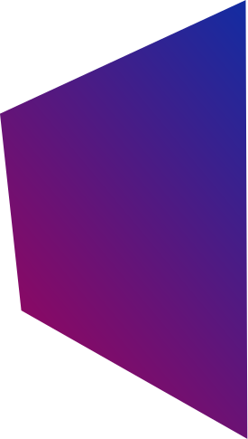
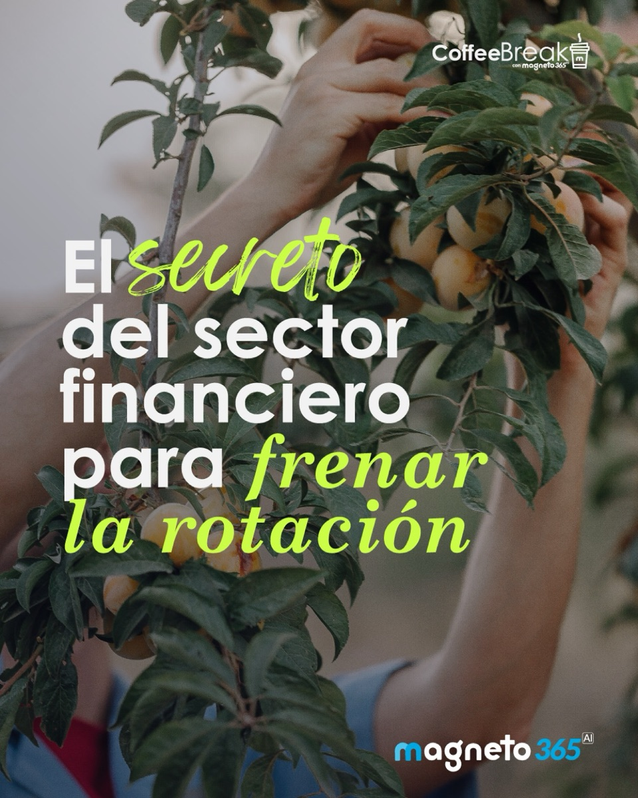
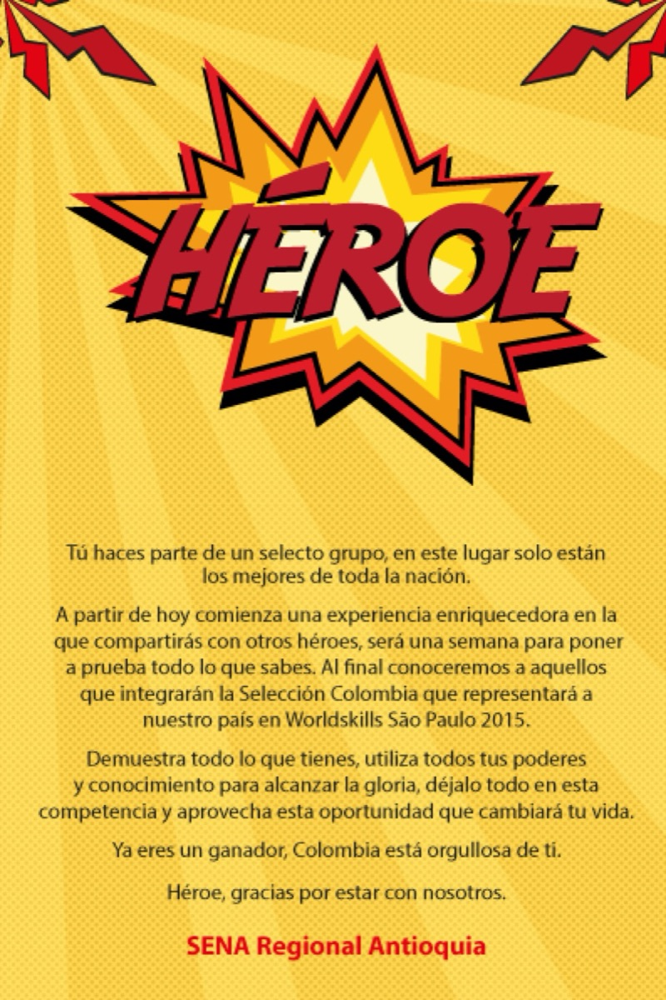
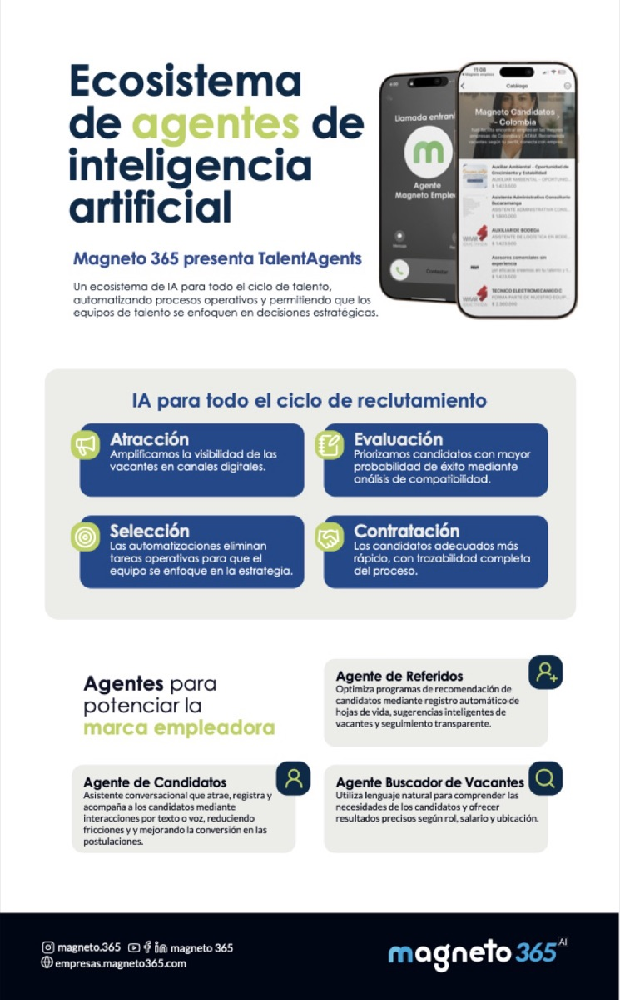
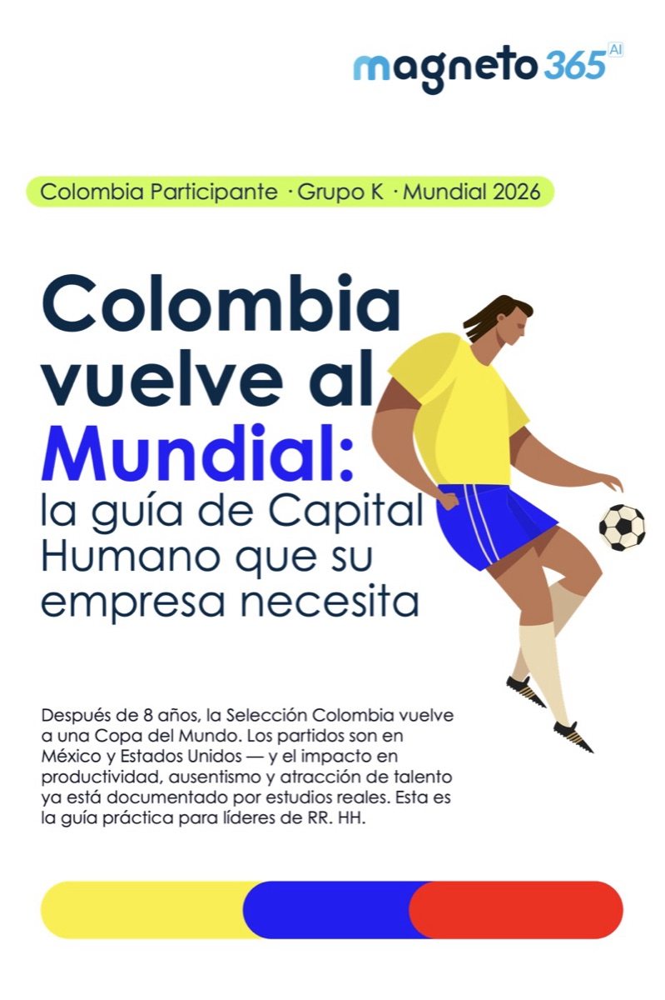
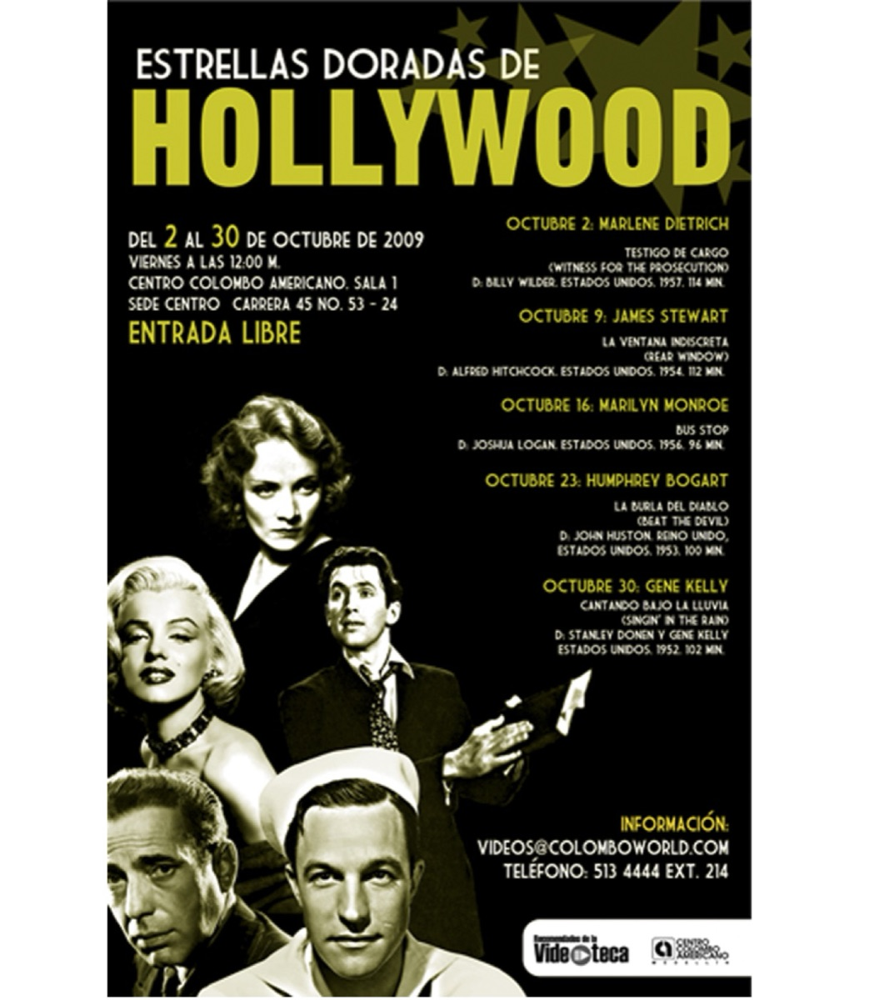
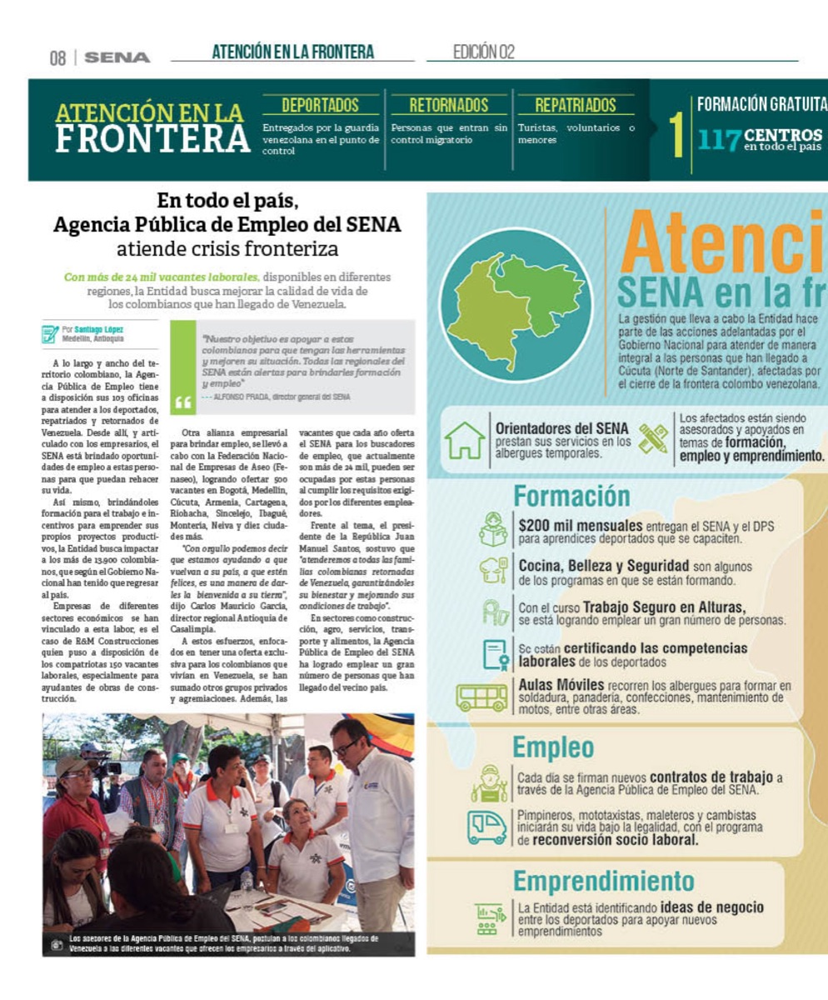
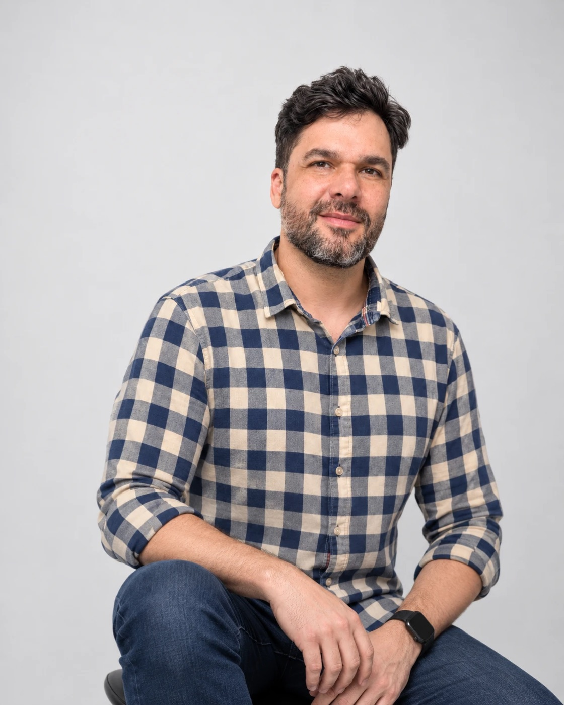

Hola, soy DavidDiseño marcas que conectan empresas con personas.
Diseño campañas, sistemas de marca y sitios web para marcas B2B, educación y cultura.

Lo que hago
Tres frentes que se cruzan en casi todos los proyectos: la marca define el tono, la campaña lo pone a circular y el sitio lo vuelve útil.
- Magneto 365
- SENA
- WorldSkills
- UdeA
- Colombo Americano
- IUSH
Casos, no piezas sueltas
Cada caso cuenta el reto, lo que hice y por qué funciona. Estos son los nueve publicados.
-
Web · Webflow2025 – 2026 Ver
Sitio corporativo Magneto 365
Más de 15 soluciones y 4 países en un mismo sistema de páginas, con versión móvil completa.
-

Campaña · Redes2026 VerCoffee Break
Carruseles para un videopodcast B2B: casos de éxito que se leen como historias.
-
Lanzamiento2026 Ver
Magneto 365 AI Academy
Una academia lanzada en tres tiempos: expectativa, lanzamiento e inscripción.
-
Identidad · Sistema de marca2025 Ver
Manual de marca Magneto 365 AI
Estrategia antes que forma: misión, customer journey y después logo, color y tipografía.
-
Producto · Presentación2025 Ver
Ecosistema de agentes virtuales
21 láminas para explicar once agentes de IA con un personaje y una plantilla.
-

Eventos · Editorial2013 – 2016 VerWorldSkills Colombia · SENA
Tarjetas de bienvenida con lenguaje de cómic, postal y piezas editoriales.
-

Editorial B2B2025 VerOne-pagers comerciales
Una familia de documentos que responde las mismas tres preguntas: problema, funcionamiento e impacto.
-

Contenido · Editorial2026 VerE-book «Colombia vuelve al Mundial»
La conversación de todo el país convertida en una pregunta de recursos humanos.
-

Afiches · Archivo2009 – 2016 VerArchivo 2009–2016
Afiches de cine, teatro, música y congresos para la UdeA y el Colombo Americano.
Del afiche al sitio, el mismo oficio
Empecé diseñando afiches de cine y teatro en 2009. Hoy diseño sistemas completos. Lo que no cambia es la pregunta: qué tiene que entender quien lo mira.

De 2009 a 2026
- Magneto 3652025 – 2026Diseñador B2B
Sitio en Webflow, marca, campañas y material comercial.
- SENA · IUSH2017 – 2024Instructor y docente
Marca, UX/UI y diseño digital. Más de 300 estudiantes formados.
- SENA Regional Antioquia2013 – 2016Editorial, campañas y eventos
Periódico regional, boletines y WorldSkills Colombia.
- UdeA · Colombo Americano2009 – 2013Afiches académicos y culturales
Cine, teatro, música y congresos.
Mi proceso, paso a paso
Lo aprendí enseñando: una buena pieza se puede explicar, repetir y escalar.
- 01
Entender
Escucho al negocio, a los usuarios y al equipo comercial antes de abrir Figma.
- 02
Diseñar
Exploro direcciones, uso la IA para ampliar opciones y decido con criterio.
- 03
Sistematizar
Convierto la solución en plantillas, componentes y manuales que el equipo puede seguir.
Diseñador que también enseña
Diseñador visual y especialista en Gerencia de Marca, con más de diez años entre el estudio y el aula.
Fui instructor en el SENA (2017–2024) y docente de cátedra en la IUSH (2020–2024). Esa práctica de explicar, ordenar y estandarizar es la que hoy aplico a los sistemas de marca. Uso la IA generativa (ChatGPT y Claude) como apoyo, con criterio editorial y validación humana.
- Illustrator
- Photoshop
- InDesign
- After Effects
- Figma
- Webflow
